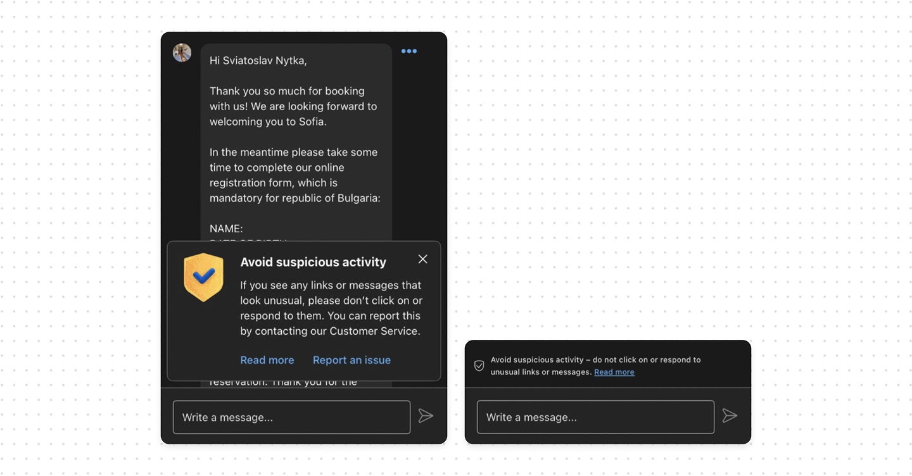
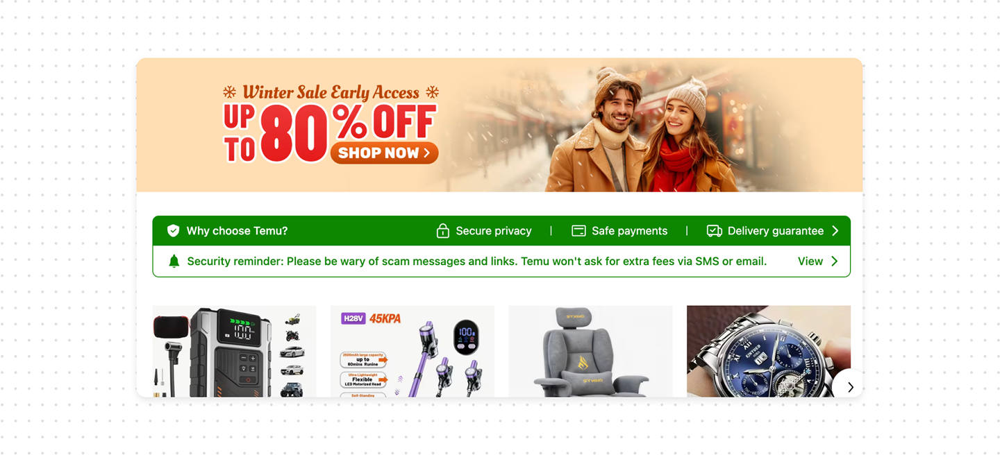
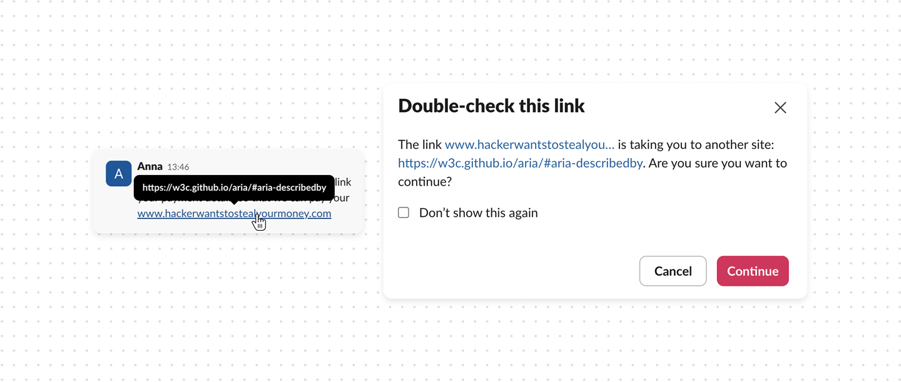
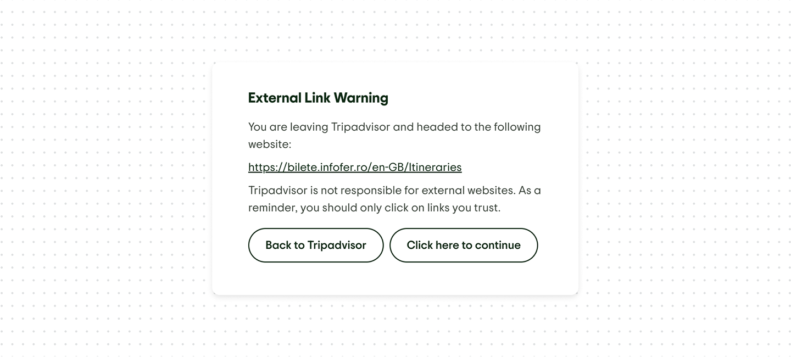
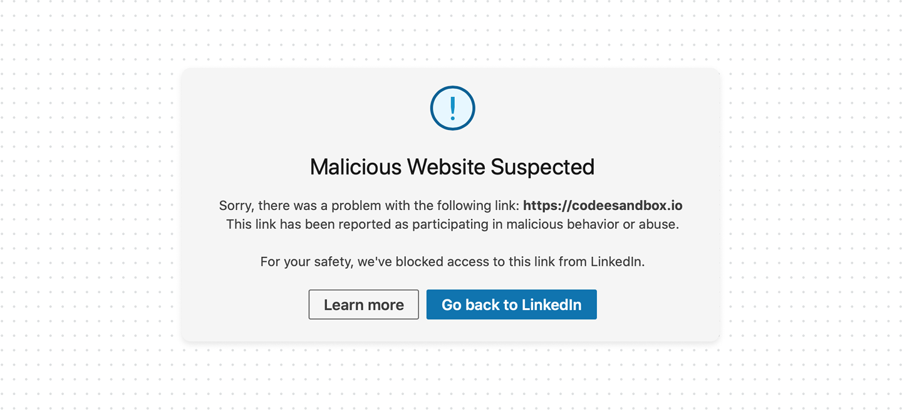
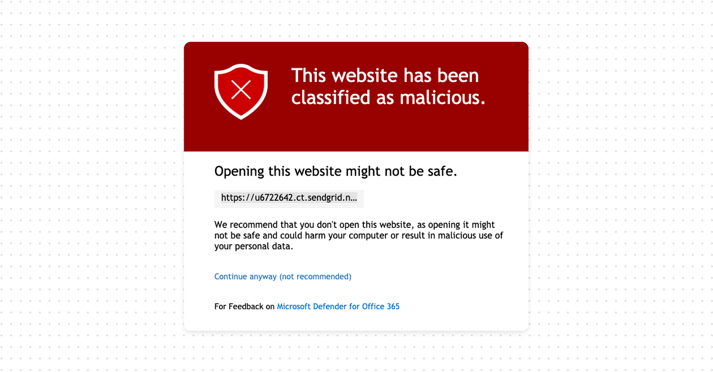

Malicious link warning: How to design, UX best practices & examples

A message inside any familiar product feels different from a random message on the internet. The user already trusts the product. They know the interface, recognize the logo, and assume the conversation is happening in a controlled environment. But the platform doesn’t necessarily know whether the person sending it is trustworthy.
The problem gets worse when the link itself is misleading. A message can visually show www.airbnb.com, while it is just a text linked to www.scam.com. The user sees one destination and gets sent to another. On a desktop, they might notice the real URL by hovering over it. On mobile, there may be no equivalent moment to inspect the destination before opening it.
The external links warning helps prevent security risks. It informs users before redirecting to external websites and provides clear explanations and guidance.
What good UX looks like
- Warn users before they need to think about links. It can be shown when a conversation starts, near the message composer, or as a small banner at the top of the thread.
- Explain the real destination when the user clicks. Don’t immediately throw the user onto another website, show the real URL. This becomes even more important when the visible text doesn’t match the real destination.
- Don’t wait for the user to discover a bad link. Products that allow user-generated content should maintain a reputation system for links. When someone sends a message containing a link, the system can check the destination against known malicious domains, phishing databases, previous reports, and other security signals.






Bottom line
Products where people communicate with each other should treat user-generated links as untrusted content by default. Warn users before they leave, show the real destination at the moment of interaction, and use link reputation to block or flag known threats.
Link protection works best as a layered system. The product can check URLs against threat-intelligence feeds and reputation databases, inspect redirect chains, and compare the visible link text with the actual destination. It’s also useful to consider signals such as newly registered domains, suspicious URL patterns, and domains that have been reported for phishing or abuse.
Of course, not every product has the resources to build or maintain these detection systems. The good news is that you can still prevent many attacks with simple UX patterns that warn users at the right moment.